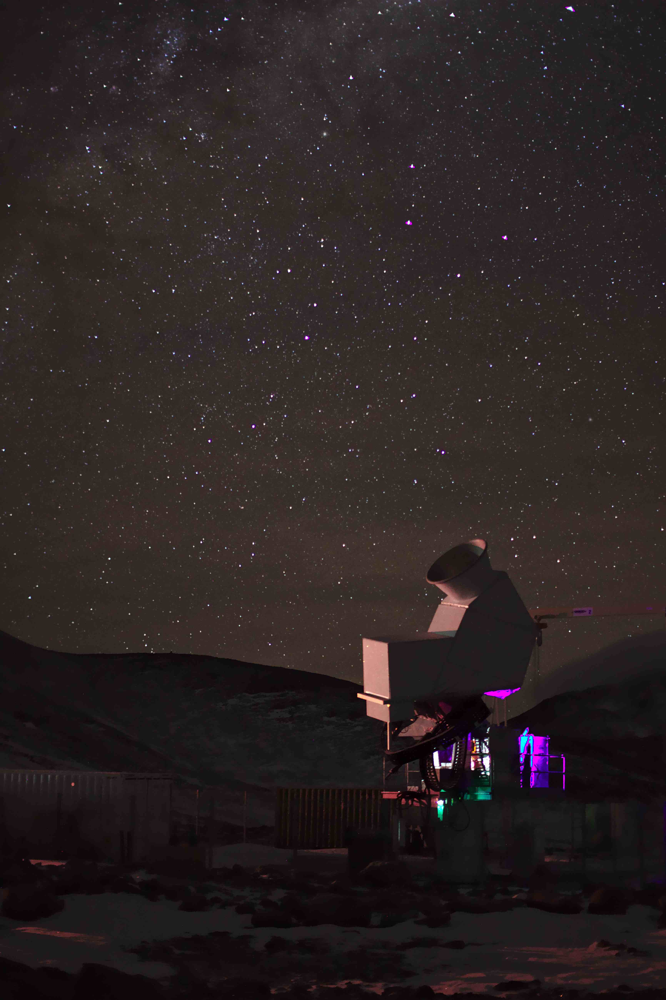
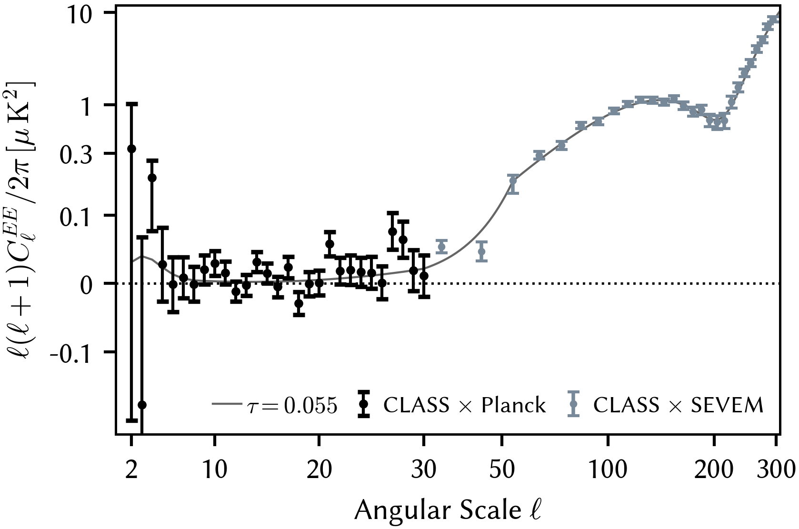
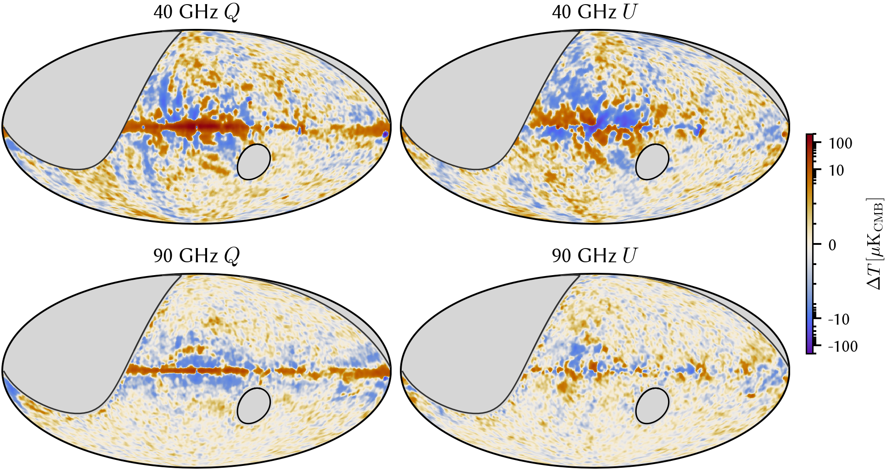
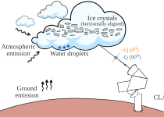
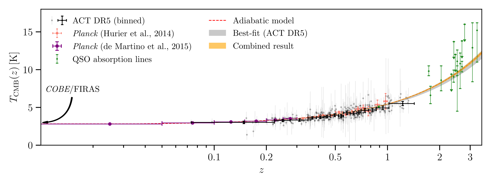

Hello!
I am an observational cosmologist using the Cosmic Microwave Background (CMB) as a precision probe of fundamental physics. I work with CLASS, South Pole Telescope, and the BICEP/Keck collaborations. My recent focus has been reconstructing the cosmic matter distribution through CMB lensing, and measuring large-scale CMB polarization from the ground to constrain inflation and cosmic reionization.
Currently, I am a KICP Postdoctoral Fellow at the Kavli Institute for Cosmological Physics, University of Chicago. I received my Ph.D. from Johns Hopkins University and my B.S. in Physics from Peking University.
Feel free to get in touch about research, collaborations, or outreach!
Research

Large-angular-scale CMB polarization encodes the reionization optical depth and the primordial gravitational wave background predicted by inflation — signals inaccessible to small-scale experiments.
CLASS is a four-frequency (40, 90, 150, and 220 GHz) polarimetric array in the Atacama desert, Chile. Since its first light in 2016, we have made significant progress in understanding our instrument and data, and used it to characterize planetary atmospheres (Earth and Venus!), Galactic foregrounds, and to make the first reionization optical-depth measurement from the ground.
Stay tuned for more CLASS results!
Figure credit: M. Petroff
With three years of 90 GHz data, CLASS makes the first measurement of large-scale E-mode polarization at angular scales $2\leq\ell\leq 300$ (Li et al., 2025). This demonstrates polarization modulation and analysis techniques that mitigate ground-based systematics while reliably recovering the CMB signal.
By cross-correlating with Planck, CLASS achieves the first ground-based measurement of the reionization optical depth $\tau=0.053_{-0.019}^{+0.018}$. More CLASS CMB data are on the way, with improved data quality and higher mapping speed—eventually enabling us to surpass the state-of-the-art satellite measurement.

Map-making is a critical component of large-scale CMB science. We have developed map-making algorithms that enable optimal recovery of large-scale polarization, compatible with fast modulation and robustness against instrumental systematics.
These techniques have been applied to make the CLASS data maps at 40 GHz (Li et al., 2023a) and 90 GHz (Li et al., 2025). The resulting maps achieve better sensitivity than space-based missions at comparable frequencies, and represent the best low-$\ell$ performance ever obtained from ground-based observations ($\ell_\mathrm{knee}\leq 20$).

Atmosphere poses great challenge to ground-based CMB experiments Polarization experiments are less susceptible—but clouds can be a linear polarization source via Rayleigh scattering of ambient thermal radiation.
In Li et al., 2023b, we used multi-frequency CLASS data (40, 90, 150, and 220 GHz) to study cloud events. Polarization transients correlated with optical cloud images show predominantly 90°-oriented (Stokes $-Q$) signals consistent with ice-crystal scattering. The spectra roughly match Rayleigh scattering, with possible deviations from liquid-water absorption and Mie-scattering. This work has important implications for ongoing and future ground-based CMB experiments.

Standard cosmology predicts $T_\mathrm{CMB}(z)=T_0(1+z)$ for adiabatic expansion, yet this relation is hard to test in the distant universe. In Li et al., 2021, we used galaxy clusters detected by the Atacama Cosmology Telescope to test this. The thermal Sunyaev–Zel'dovich effect is sensitive to the local CMB temperature during scattering. We confirmed no deviation from the adiabatic model out to $z\approx 1.4$.
Publications
As Main Author
As Contributing Author
Astro Today
A daily digest of arXiv astro-ph papers. Open full page →